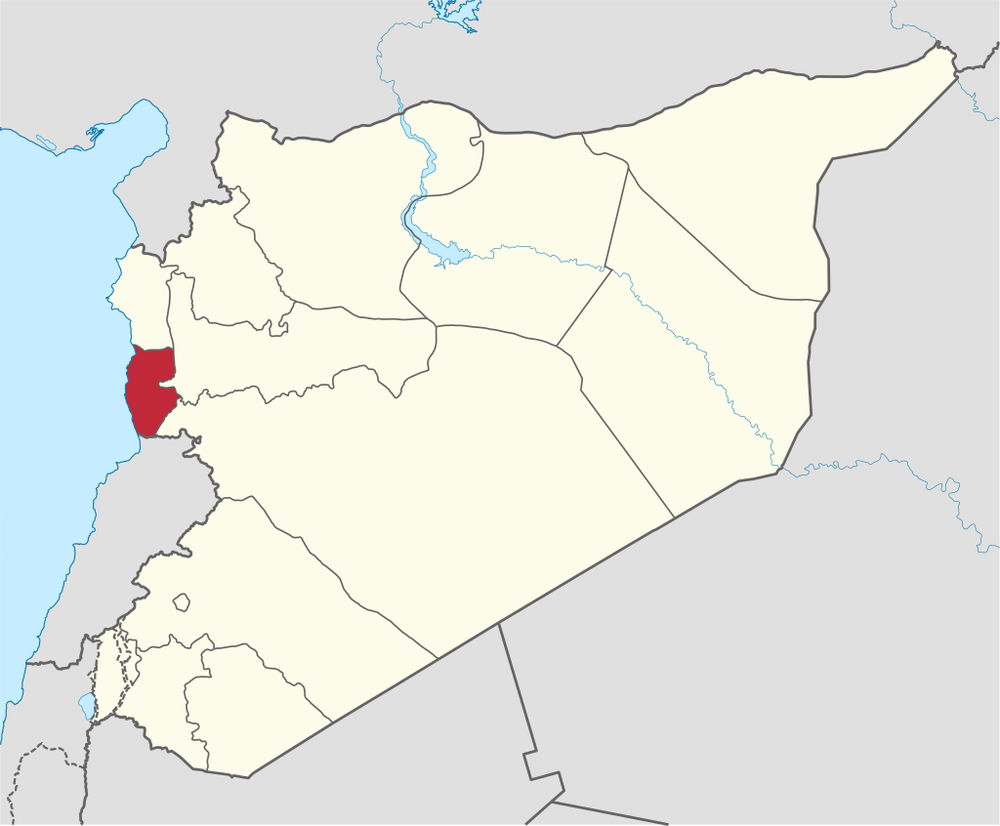

محافظة الحسكة

:عنها
- .تقع في غرب سوريا
- . تحدها محافظة اللاذقية من الشمال، ومحافظتا حمص وحماة من الشرق، ولبنان من الجنوب، والبحر الأبيض المتوسط من الغرب
- .أمامها عدة جزر (أرواد - العباس - النمل - أبو علي) والجزيرة المأهولة الوحيدة هي جزيرة أرواد
tartus on the map